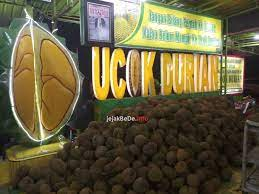
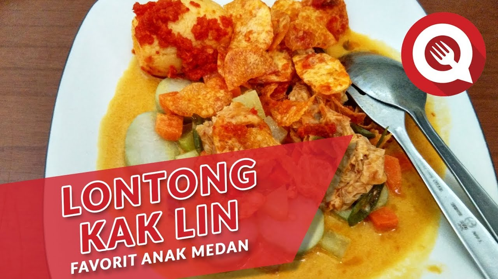

3 KULINER YANG WAJIB ANDA KUNJUNGI DI MEDAN |
|
|---|---|
|
Untuk melihat lebih detailnya bisa masuk ke link berikut: ucokdurian.id lontong_kaklinmedan?igshid sotosinarpagiofficial?igshid |
|
|
|
Ucok Durian
Ucok Durian, gerai paling terkenal di Kota Medan, menjadi tujuan favorit wisatawan domestik maupun mancanegara dengan menyajikan durian segar berkualitas terbaik, serta beragam macam olahan seperti pencake durian yang manis dan lembut. Segera kunjungi Ucok Durian dan nikmati kelezatan tak tertandingi dari durian Medan.
Lontong Kak Lin
Lontong Kak Lin sangat terkenal di Kota Medan. Tempat yang sudah ada sejak 1985 tersebut memiliki cita rasa khas pada menu makanannya khususnya lontong. Meski begitu, Lontong Kak Lin juga menyediakan menu nasi uduk, nasi pecel, nasi sayur, mie gomak, bihun dan aneka jajanan tradisonal. Segera kunjungi Lontong Kak Lin saat anda ada di Kota Medan.
Soto Sinar Pagi
Kuliner yang terakhir adalah kuliner legendaris Medan yaitu Soto Sinar Pagi yang berdiri selama lebih dari 60 tahun. Hal menarik dari kuliner tersebut adalah kuah kuningnya yang lezat dan kaya bumbu rempah khas. Pelanggan juga bebas untuk memilih varian soto daging sapi atau daging ayam loh. Segeralah ada datang dan mencoba langsung dengan datang ke Soto Sinar Pagi. |